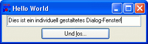

Erstellung von Dialogfenstern
Mit RapidBATCH 5 ist es auch erstmals möglich, eigene Dialogfenster direkt in RapidBATCH zu implementieren. RapidBATCH verwendet dazu ein sehr einfaches, aber augeklügeltes System, welches es möglich macht, Dialogfenster zu erstellen und Dialogfensterelemente zu verändern und auszulesen.
Mit nur ingesamt fünf verschiedenen Anweisungen bzw. Funktionen haben Sie somit die Entwicklung eigener Windows-Programme mit und in RapidBATCH voll im Griff, und können so gut wie jede Art von Dialog und damit echte Windows-Anwendungen in RapidBATCH selber implementieren.
Im Grunde ist die Entwicklung von eigenen Dialogen in RapidBATCH eine simple und unkomplizierte Angelegenheit:
- Dialogelemente erzeugen
- Werte-/Eigenschaften der Dialogelemente setzen
- Dialogfenster anzeigen
- Dialog starten, auf Ereignisse reagieren und Werte-/Eigenschaften der Dialogelemente auswerten
Folgend dargestelltes Beispielscript führt genau diese Schritte durch; Es erstellt einen Dialog mit einem einzeiligen Eingabefenster und einem Button. Klickt der Benutzer den Button, so wird der im Textfeld eingegebene Text in einem Meldungsfenster ausgegeben.
rem Widgets erzeugen
newdialog 'myDialog', 'DIALOG', '1|1|300|80'
newdialog 'myDialog:Eingabe', 'INPUT', '10|1|273|25'
newdialog 'myDialog:Los', 'BUTTON', '80|27|140|25'
rem Setzen der Werte/Eigenschaften
letdialog 'myDialog', 'CAPTION', 'Hello World'
letdialog 'myDialog:Eingabe', 'TEXT', 'Dies ist ein Text!'
letdialog 'myDialog:Los', 'CAPTION', 'Und &los...'
rem Dialog anzeigen
letdialog 'myDialog', 'VISIBLE', [true]
repeat
rem Dialog starten
rundialog [event] = '0'
rem Ereignis auswerten
if [event] = 'click_myDialog:Los'
rem Textfeld auslesen
getdialog [text] = 'myDialog:Eingabe', 'TEXT'
echo 'Der Wert im Textfeld lautet: ' # [text]
endif
until [event] = 'close_myDialog'
end

Script mit individuell programmiertem Dialog
Ich werde Sie nun Schritt-für-Schritt in diese neue Welt der schier unbegrenzten Möglichkeiten einführen, denn dieses neue, sehr effektive Feature, eigene Dialoge und Fenster zu programmieren, macht RapidBATCH nicht nur zu einer starken Script- und Automatisierungssprache sondern auch zu einem schnellen und unkomplizierten Werkzeug zur Entwicklung von echten, individuellen Windows-Anwendungen aller Art.
Um Widgets zu erzeugen verwenden wir die Anweisung NEWDIALOG. NEWDIALOG benötigt, wie im Beispielscript zu sehen, als Parameter ein so genanntes Widget-Label, welches man auch als Namen für das Widget ansehen kann; Über diesen Namen kann das Widget später angesprochen werden.
Des weiteren erwartet NEWDIALOG einen Widget-Typ, der angibt, welche Art von Widget wir erzeugen möchten (z.B. Dialogfenster, Button, einzeiliges Eingabefeld, mehrzeiliges Eingabefeld, usw.) sowie die Pixelkoordinaten und -dimensionen, um das Widget zu platzieren. Die Koordinaten werden dabei durch den bereits bekannten Standard-Listenseparator (normalerweise ein "|"-Zeichen (Pipe)) als String in der Form "X-Koordinate|Y-Koordinate|Breite|Höhe" angegeben.
In unserem Beispielscript erzeugen wir also mit der Anweisung
newdialog 'myDialog', 'DIALOG', '1|1|300|80'
ein neues Widget vom Typ "DIALOG" (sprich: ein Dialog-Basisfenster) mit einer Breite von 300 Pixel und einer Höhe von 80 Pixel am linken oberen Bildschirmrand (X- und Y-Koordinaten 1|1). Dieses Dialogelement wird unter dem Namen "myDialog" angelegt, über den wir später auf das Element zugreifen können.
Die zwei darauffolgenden NEWDIALOG-Anweisungen
newdialog 'myDialog:Eingabe', 'INPUT', '10|1|273|25'
newdialog 'myDialog:Los', 'BUTTON', '80|27|140|25'
erstellen ein einzeiliges Eingabefeld (Typ: "INPUT") und einen Button (Typ: "BUTTON") auf unserem Dialog-Basisfenster "myDialog".
Dass diese Widgets auf dem Basisdialog "myDialog" platziert werden, ist an der Voranstellung von "myDialog:" beim Widget-Label erkennbar. Die Widgets werden daher unter genau diesem Dialoglabel angelegt; Sinn und Zweck des ganzen ist, dass jedes Dialogelement auf einem Dialog einmalig (d.h. mit einem einmaligen Namen) sein muss, denn es können auch zwei oder mehr Dialogfenster zur selben Zeit angezeigt werden. Diese Dialogelemente werden als "Child-Elemente" bezeichnet, sie stellen so zusagen die Kinder des Dialogs "myDialog" dar, da sie auf "myDialog" angezeigt und diesem Basisfenster hierarchisch untergeordnet sind.
Die Angabe der Pixelkoordinaten ist bei allen Child-Widgets relativ zur linken oberen Ecke des Fensters.
Nachdem wir nun die Widgets erzeugt haben, setzten wir für diese verschiedene Werte, in unserem Fall bekommt das Dialogfenster den Titel "Hello World", der Button die Beschriftung "Und los..." und das Textfeld den Text "Dies ist ein Text!".
rem Setzen der Werte/Eigenschaften
letdialog 'myDialog', 'CAPTION', 'Hello World'
letdialog 'myDialog:Eingabe', 'TEXT', 'Dies ist ein Text!'
letdialog 'myDialog:Los', 'CAPTION', 'Und &los...'
Alle Werte werden mit Hilfe der Anweisung LETDIALOG gesetzt. LETDIALOG erwartet als Parameter das Label des Widgets, bei dem eine Eigenschaft gesetzt werden soll, die Bezeichnung der Eigenschaft, die gesetzt werden soll, sowie den entsprechenden Wert. Der Eigenschaftsbezeichner "CAPTION" setzt die Beschriftung eines Widgets, die Eigenschaft "TEXT" den Text im Editierbereich von Eingabefeldern; Welche Eigenschaften unterstützt werden ist von Widget zu Widget unterschiedlich; Ein Listenfeld kann beispielsweise keine Beschriftung (CAPTION) haben, ein Dialogfenster kann keine Liste eines Listenfeldes aufnehmen. Es ist also vom Typ des Widgets abhängig, was wie gesetzt wird. Wir werden jedoch später genauer darauf eingehen.
Mit der Zeile
letdialog 'myDialog', 'VISIBLE', [true]
machen wir zu guter letzt noch das Fenster sichtbar; Nur Dialogfenster-Widgets sind nach ihrer Erstellung mit NEWDIALOG unsichtbar, da es nicht empfehlenswert ist, das Basisfenster schon zur Anzeige zu bringen wenn noch nicht alle Dialogelemente erzeugt und gesetzt wurden.
Die soeben schon erörterte Funktion RUNDIALOG startet nun eine interne Warteschleife, die auf Ereignisse vom Dialogfenster wartet.
rundialog [event] = '0'
Wenn nun beispielsweise ein Button gedrückt wurde, wird ein Ereignis (Event) ausgelöst. Die Funktion gibt in diesem Fall einen String im Format "Ereignis_Widget-Label" zurück. In unserem Script wird z.B. der String "click_myDialog:Los" zurückgegeben, wenn der "Und Los..."-Button, den wir zuvor definiert haben, angeklickt wurde.
Die bei RUNDIALOG als Parameter übergebene Zahl ist die Anzahl an Millisekunden, die gewartet wird, bis ein optionaler Timeout eintritt (1 Sekunde entspricht 1000 Millisekunden). Dies bedeutet, dass das Fenster nur für eine bestimmte Zeit auf Ereignisse wartet. Tritt kein Ereignis ein, wird der Timeout ausgelöst - die Funktion gibt dann einen Leerstring zurück. In unserem Fall aber ist der Millisekunden Wert 0, d.h. RUNDIALOG hat keinen Timeout und wartet solange, bis irgendetwas mit oder auf dem Dialog passiert.
Im darauffolgenden IF-Block überprüfen wir nun diesen von RUNDIALOG zurückgegebenen Event-String; Wenn also "click_myDialog:Los" eintrat, lesen wir mit der GETDIALOG-Funktion den Text des Textfeldes aus und geben ihn mit Hilfe der ECHO-Anweisung aus.
getdialog [text] = 'myDialog:Eingabe', 'TEXT'
echo 'Der Wert im Textfeld lautet: ' # [text]
GETDIALOG ist sozusagen die umgekehrte Version von LETDIALOG: Hier lesen wir eine bestimmte Eigenschaft des ebenfalls bei der Funktion spezifizierten Dialoglabels aus, in diesem Fall die Eigenschaft "TEXT".
Mit der abschlieflenden UNTIL-Anweisung wird gewährleistet, dass RUNDIALOG solange wieder neu aufgerufen wird, bis der Benutzer den Schlieflen-Button des Basisfensters klickt. Ist dies der Fall, gibt RUNDIALOG den Ereignis-String "close_myDialog" zurück, auf den wir entsprechend abprüfen:
repeat
rem Dialog starten
rundialog [event] = '0'
rem Ereignis auswerten
if [event] = 'click_myDialog:Los'
rem Textfeld auslesen
getdialog [text] = 'myDialog:Eingabe', 'TEXT'
echo 'Der Wert im Textfeld lautet: ' # [text]
endif
until [event] = 'close_myDialog'
Ich denke, dass Sie hiermit nun das grobe Verarbeitungskonzept von benutzerdefinierten Dialogen in RapidBATCH verstanden haben. Im nächsten Abschnitt werden wir genauer auf die verschiedenen Dialogelemente sowie ihre Eigenschaften und Ereignisse eingehen.
Copyright © 2000-2006 by J.M.K S.F. Software Technologies, Jan Max Meyer
All rights reserved.